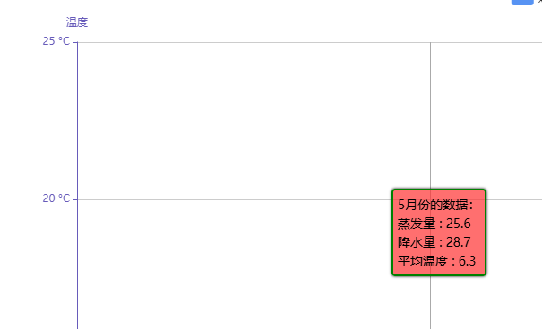
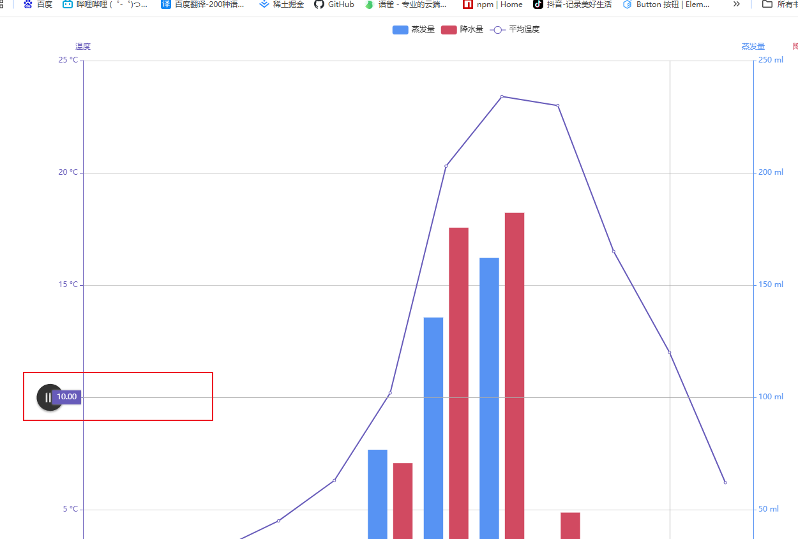
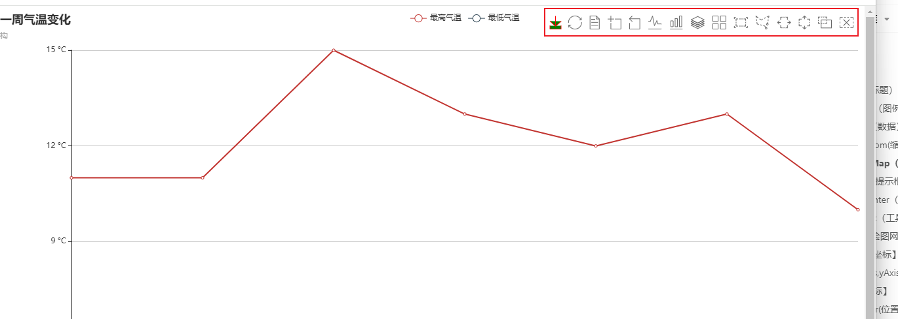
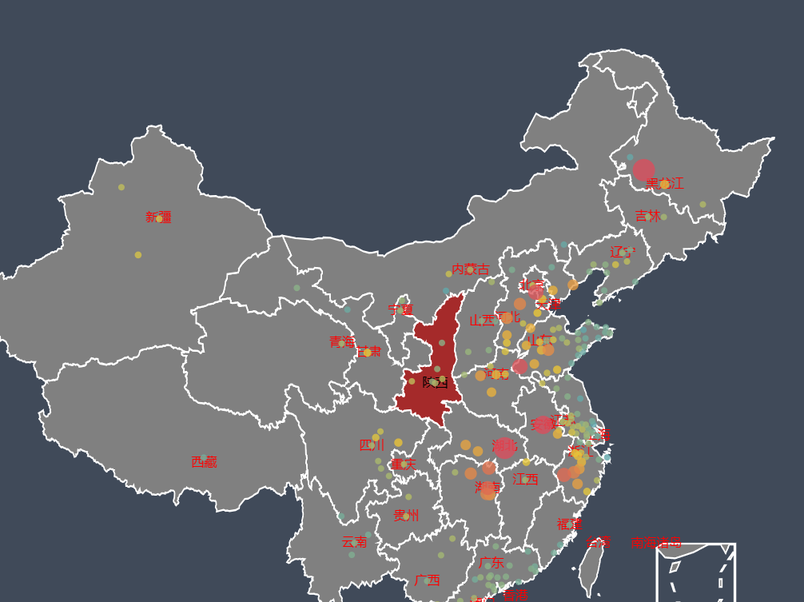
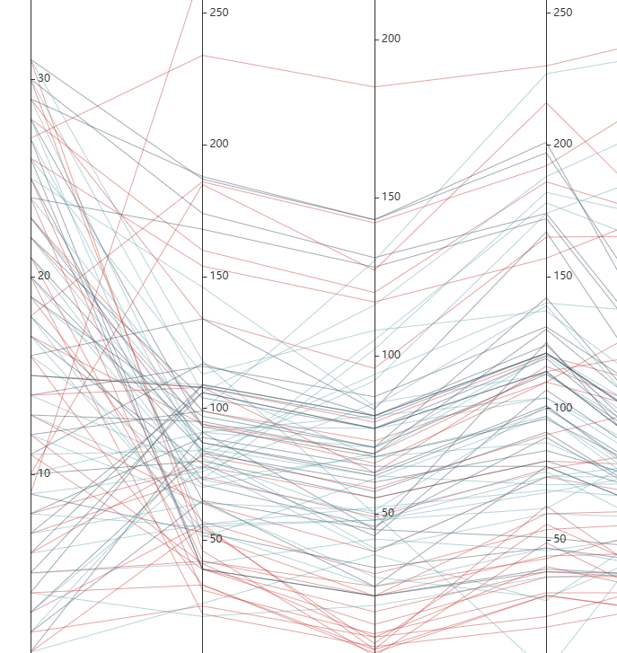
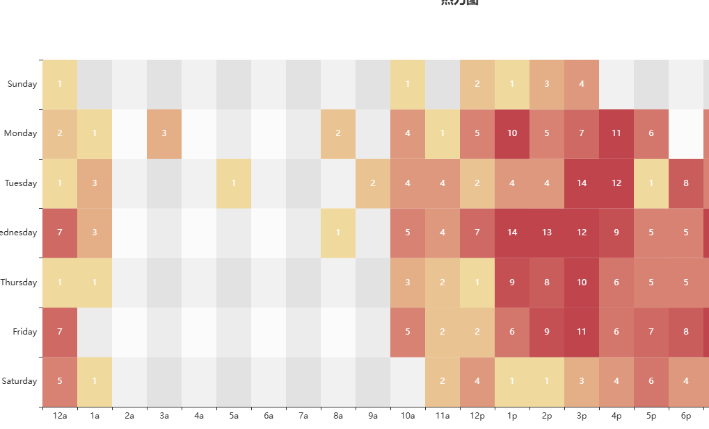

生成了一个 echarts 实例,配置一个对象
const myEchart = echarts.init(document.getElementById("chart1"));
myEchart.setOption({});
title（标题）
主要是文本样式，背景样式，是否显示，位置，阴影
title: {
id:'',
show:true, //是否显示标题组件
text:'当月销售业绩清单',
link:'http://www.baidu.com/',
target:'self',
textStyle:{
color:'gold',
fontStyle:'italic',
fontWeight:'normal',
fontFamily:'Microsoft YaHei',
fontSize:20,
lineHeight:30,
textBorderColor:'red',
textBorderWidth:2,
textShadowColor:'#000',
textShadowBlur:2,
textShadowOffsetX:10,
textShadowOffsetY:10,
},
//幅标题
subtext:'陈学辉',
sublink:'http://www.qq.com/',
subtarget:'self',
subtextStyle:{
},
textAlign:'left', //两个标题的内容不一样的话，有可能被截断
padding:[10,5,20,30],
itemGap:20,
left:10,
top:10,
backgroundColor:'#ccc',
borderColor:'#000',
borderWidth:2,
borderRadius:[5,10,20,30],
shadowColor: 'rgba(0, 0, 0, 0.5)',
shadowBlur: 10,
shadowOffsetX:5,
shadowOffsetY:5,
},
legend（图例）
主要设置类型(滚动非滚动),名字，图标，选中模式，动画
legend: { //图例组件
//show:true,
data: ['今日销量', '昨日销量', {
name: '明日销量',
icon: 'image://',
textStyle: {
//float:'left',
}
}],
type: 'plain',
left: 'right',
orient: 'horizontal',
padding: [10, 20],
itemGap: 20,
itemWidth: 35,
itemHeight: 24,
formatter: '{name} 高么？',
formatter: function (name) {
return "你说 " + name + " 高么？";
},
selectedMode: 'multiple',
inactiveColor: '#ccc',
selected: {
'今日销量': true,
'昨日销量': true,
'明日销量': true,
},
textStyle: {
color: '#f00'
},
backgroundColor: 'gray',
},
/* tooltip:{
}, */
series（数据）
这里面的 type 直接决定了图表的形状
series:{
type:'radar',
data:[
{
name:'火箭',
value:[109,38,29,6,2,60,17]
},
{
name:'勇士',
value:[118,36,25,6,6,77,13]
}
]
}
dataZoom(缩放区域)
图表可以缩放
dataZoom：{
type:'inside'
}
visualMap（高亮某一部分数据的工具）
visualMap: [];
tooltip(提示框)
鼠标移到某一个位置的提示框
tooltip：{
}

axisPointer（坐标轴指示器）

toolbox（工具栏）

grid（绘图网格）
直角坐标系内绘图网格，单个 grid 内最多可以放置上下两个 X 轴，左右两个 Y 轴
1.图表的背景显示网格，以及背景颜色等
2.确定图表的位置
grid:{
// show:true,
left:"20%",
width:"100%",
containLabel:false,
backgroundColor:'gray',
borderColor:'#f00'
},
【直角坐标】
xAxis,yAxis（x 轴,y 轴）
xAxis: [
{
data: ["衬衫", "羊毛衫", "雪纺衫", "裤子", "高跟鞋", "袜子"],
},
{
data: ["衬衫1", "羊毛衫1", "雪纺衫1", "裤子1", "高跟鞋1", "袜子1"],
},
{
data: ["衬衫2", "羊毛衫2", "雪纺衫2", "裤子2", "高跟鞋2", "袜子2"],
offset: -100,
},
];
【极坐标】
polor(位置)
polar: {
center:['50%', '50%'],
radius:"80%",
},
radiusAxis（极坐标系的径向轴）（半径）
angleAxis（极坐标系的角度轴）（旋转角度）
【雷达图】
rader: {
}
【地理信息】
geo(坐标)
geo: {
}

【平行坐标】
parallel：{
},
parallelAxis:[
]

【时间轴】
【柱状图】
【饼图】
【气泡图】
【矩阵树图】
webpack 打包分析
【k 线图】
【热力图】
